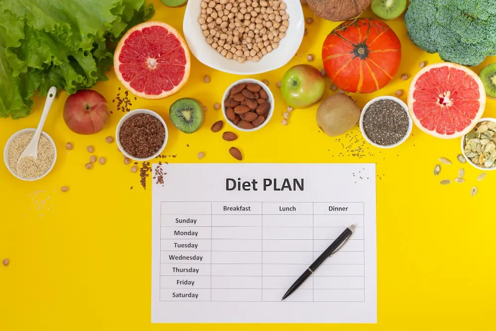

फैटी लिवर डाइट चार्ट (हिंदी में): 7 दिन का आसान इंडियन मील प्लान
.webp)
Senior Liver Transplant & HPB Surgeon with 15+ years of clinical expertise.
17 Feb 2026

फैटी लिवर में सबसे आम गलतफहमी यह होती है कि “अब तो भूखा रहना पड़ेगा।” सच यह है कि फैटी लिवर में जरूरत भूखे रहने की नहीं, बल्कि सही तरह का खाना, सही मात्रा में, सही समय पर खाने की होती है। एक अच्छा डाइट प्लान लिवर पर जमा फैट को कम करने में मदद कर सकता है, खासकर जब साथ में वजन, शुगर और ट्राइग्लिसराइड्स भी कंट्रोल हों।
इस लेख में आपको फैटी लिवर के लिए सरल डाइट नियम, क्या खाना चाहिए, और एक 7 दिन का इंडियन डाइट चार्ट मिलेगा। अगर आप फैटी लिवर का बेसिक समझना चाहते हैं, तो पहले हमारा pillar पढ़ें: “फैटी लिवर क्या है? (हिंदी गाइड)”। और अगर आपको लक्षणों की clarity चाहिए, तो “फैटी लिवर के लक्षण (हिंदी में)” वाला लेख मदद करेगा।
1) फैटी लिवर में डाइट से फायदा कैसे होता है?
डाइट लिवर में फैट कम करने में कैसे मदद करती है?
फैटी लिवर में डाइट का काम सिर्फ “कम खाना” नहीं है। डाइट का असली काम है:
- शुगर स्पाइक कम करना, ताकि शरीर
अतिरिक्त फैट जल्दी न बनाए
- रिफाइंड कार्ब्स और तला हुआ कम
करके लिवर पर स्ट्रेस घटाना
- वजन और पेट की चर्बी घटाने में मदद
करना
- ट्राइग्लिसराइड्स और मेटाबॉलिक
हेल्थ सुधारना
बहुत मामलों में फैटी लिवर का root कारण lifestyle और metabolic health होती है। इसलिए डाइट सही होगी तो लिवर को रिकवरी का मौका मिलता है।
“डाइट चार्ट” किसके लिए सबसे जरूरी है?
डाइट चार्ट खासकर इन लोगों के लिए बहुत उपयोगी होता है:
- रिपोर्ट में Grade 2 या Grade
3
- वजन ज्यादा या पेट की चर्बी
- डायबिटीज / प्री-डायबिटीज
- High triglycerides
- बैठकर काम करने वाला lifestyle (कम
चलना-फिरना)
2) फैटी लिवर डाइट के 8 आसान नियम (Indian Context)
Rule 1: प्लेट मेथड अपनाइए (बहुत simple)
हर main meal (लंच/डिनर) में कोशिश करें:
- आधी प्लेट सब्जियां (सलाद + पकी
सब्जी)
- 1/4 प्लेट प्रोटीन
(दाल/चना/पनीर/अंडा/फिश/चिकन)
- 1/4 प्लेट कार्ब्स (रोटी/चावल,
मात्रा नियंत्रित)
यह तरीका इसलिए काम करता है क्योंकि इससे फाइबर बढ़ता है, प्रोटीन मिलता है और कार्ब्स अपने आप कंट्रोल हो जाते हैं।
Rule 2: मीठा और शुगर ड्रिंक सबसे पहले कम करें
फैटी लिवर में sugar सबसे बड़ा “silent trigger” हो सकता है:
- कोल्ड ड्रिंक, पैक्ड जूस, शक्कर वाली
चाय/कॉफी
- मिठाई, केक, बिस्किट, चॉकलेट
अगर आपको एक ही बदलाव चुनना हो, तो शुरुआत मीठा कम करने से करें।
Rule 3: मैदा और तला हुआ “रोज़ का” नहीं होना चाहिए
- समोसा, पकोड़े, पूड़ी, भटूरा, फ्रेंच फ्राइ
- मैदा वाली ब्रेड, बिस्किट, नूडल्स, बेकरी
फूड
कभी-कभार चल सकता है, लेकिन “रोज़” नहीं।
Rule 4: डिनर हल्का, और सोने से 2–3 घंटे पहले
Late-night heavy dinner से:
- पाचन खराब होता है
- शुगर/फैट metabolism बिगड़ सकता है
फैटी लिवर में यह आदत सुधारना बहुत मदद करता है।
3) क्या खाएं? (Foods to Include)
1) प्रोटीन: लिवर डाइट का मजबूत बेस
प्रोटीन से पेट भरा रहता है और cravings कम होती हैं। विकल्प:
- दालें, चना, राजमा, मूंग (portion
के साथ)
- दही/छाछ, पनीर (कम मात्रा)
- अंडा (अगर लेते हैं)
- फिश/चिकन (तला हुआ नहीं,
उबला/ग्रिल/रोस्ट)
2) सब्जियां और फाइबर: हर दिन जरूरी
- हरी सब्जियां, लौकी, तोरी, भिंडी, फूलगोभी,
पत्तागोभी, गाजर
- सलाद + पकी सब्जी दोनों रखें
फाइबर से शुगर कंट्रोल बेहतर होता है और वजन घटाने में मदद मिलती है।
3) कार्ब्स: रोटी/चावल बंद नहीं, मात्रा सही रखें
- गेहूं/मल्टीग्रेन रोटी ठीक रहती है
- चावल भी लिया जा सकता है, लेकिन मात्रा नियंत्रित
रखें
अगर आपको डायबिटीज है, तो portion और timing पर ज्यादा ध्यान देना होगा।
4) 7-Day फैटी लिवर डाइट चार्ट (Indian)
नीचे 7 दिन का simple meal plan दिया है। यह “भूखा रखने वाला” प्लान नहीं है। यह ऐसा प्लान है जो शुगर स्पाइक कम करता है, पेट भरा रखता है और रोज़ाना follow करना आसान है।
Note: अगर आपको डायबिटीज है, तो फल की मात्रा, चावल/रोटी की quantity और snack timing doctor/dietitian की सलाह से adjust करें।
Day 1
- Breakfast: वेज दलिया / पोहा (कम
तेल) + 1 कटोरी दही
- Mid-morning: 1 फल
(सेब/अमरूद)
- Lunch: 2 रोटी + दाल + 1 सब्जी +
सलाद + छाछ
- Evening snack: भुना चना या मखाना
+ बिना शक्कर चाय
- Dinner: सब्जी + पनीर/दाल + 1–2
रोटी (हल्का)
Day 2
- Breakfast: उपमा + सलाद/ककड़ी + 1
कटोरी दही
- Mid-morning: नारियल पानी या
छाछ
- Lunch: ब्राउन/हैंड-पाउंडेड चावल
(छोटी मात्रा) + राजमा/छोले + सलाद
- Evening snack: स्प्राउट्स चाट (कम
नमक)
- Dinner: वेज सूप + 1 रोटी +
सब्जी
Day 3
- Breakfast: 2 बेसन चीला +
पुदीना/धनिया चटनी
- Mid-morning: 1 फल
(पपीता/संतरा)
- Lunch: 2 रोटी + पनीर/सोया/दाल +
सब्जी + सलाद
- Evening snack: रोस्टेड मखाना /
मूंगफली (छोटी मात्रा)
- Dinner: लौकी/तोरी/भिंडी की सब्जी
+ दाल + 1–2 रोटी
Day 4
- Breakfast: ओट्स (पानी/लो-फैट दूध
में) + थोड़े nuts
- Mid-morning: छाछ
- Lunch: खिचड़ी (मूंग दाल) + सलाद +
दही
- Evening snack: रोस्टेड चना /
कॉर्न (उबला)
- Dinner: ग्रिल/रोस्ट पनीर या दाल +
सब्जी + 1 रोटी
Day 5
- Breakfast: इडली + सांभर (कम
तेल)
- Mid-morning: 1 फल
(अमरूद/सेब)
- Lunch: 2 रोटी + दाल + सब्जी +
सलाद
- Evening snack: दही + थोड़ा भुना
जीरा (या plain)
- Dinner: वेज सूप + सब्जी + 1
रोटी
Day 6
- Breakfast: मूंग दाल चीला / रवा
उपमा (कम तेल)
- Mid-morning: नारियल पानी /
छाछ
- Lunch: चावल (छोटी मात्रा) + दाल +
सब्जी + सलाद
- Evening snack: स्प्राउट्स / भुना
चना
- Dinner: पनीर/दाल + सब्जी + 1–2
रोटी (हल्का)
Day 7
- Breakfast: वेज पराठा (बहुत कम
तेल) + दही
- Mid-morning: 1 फल
(पपीता/संतरा)
- Lunch: 2 रोटी + छोले/राजमा
(portion) + सलाद
- Evening snack: मखाना / नट्स (छोटी
मात्रा)
- Dinner: खिचड़ी + दही + सलाद
(हल्का)
➡️ अगर आप चाहें, मैं इसी डाइट चार्ट का Diabetic-friendly version भी बना दूँ (कम कार्ब, फलों की timing सही करके)।
स्नैक्स और cravings कैसे संभालें? (10 Smart Snacks)
फैटी लिवर में सबसे मुश्किल हिस्सा अक्सर “बीच-बीच में कुछ खाने” की आदत होती है। नीचे snack ideas ऐसे हैं जो पेट भरते हैं और sugar spikes कम करते हैं:
- भुना चना
- मखाना (कम नमक, कम तेल)
- स्प्राउट्स चाट (नींबू + हल्का
मसाला)
- छाछ (plain)
- दही (unsweetened)
- फल (1 serving, जूस नहीं)
- उबला कॉर्न (मक्खन/मायो
नहीं)
- मूंग दाल सूप
- मुट्ठी भर nuts (बहुत कम
मात्रा)
- भुनी मूंगफली (छोटी मात्रा)
मीठा खाने का मन हो तो क्या करें?
- पहले पानी/छाछ लें, cravings कई बार कम हो जाती
है
- फिर भी मन करे तो whole fruit
(जूस नहीं)
- मिठाई “daily” habit न बनाएं
बाहर खाना (Eating Out) गाइड
बाहर खाना पूरी तरह बंद करना practical नहीं होता। लेकिन smart choices से नुकसान कम हो सकता है।
Restaurant में क्या चुनें?
- तंदूरी/ग्रिल्ड विकल्प (तला हुआ
नहीं)
- दाल, सूप, सब्जी आधारित
dishes
- सलाद add करें
- पानी/छाछ जैसे simple drinks
किससे बचें?
- फ्राइड स्टार्टर, चिप्स, फ्रेंच
फ्राइज़
- क्रीमी ग्रेवी (मक्खन/क्रीम
ज्यादा)
- मीठे पेय, शेक, सॉफ्ट ड्रिंक
- बहुत देर रात का heavy meal
क्या नहीं खाना चाहिए (Short)
फैटी लिवर में ये चीजें कम/avoid करें:
- मीठा और शुगर ड्रिंक
- मैदा और बेकरी फूड
- बहुत तला हुआ
- पैकेज्ड/प्रोसेस्ड स्नैक्स
- अल्कोहल
FAQs (फैटी लिवर डाइट चार्ट पर आम सवाल)
1) क्या फैटी लिवर में रोटी और चावल खा सकते हैं?
हां, ज़्यादातर लोगों में खा सकते हैं। फर्क मात्रा (portion) और फ्रीक्वेंसी से पड़ता है। कोशिश करें कि प्लेट मेथड रखें और रिफाइंड कार्ब्स (मैदा) से बचें।
2) क्या फैटी लिवर में केला या आम खा सकते हैं?
फल generally ठीक होते हैं, लेकिन:
- मात्रा सीमित रखें
- जूस न लें, whole fruit लें
- अगर डायबिटीज है, तो फल की timing और quantity
doctor/dietitian से तय करें
3) क्या दूध, दही और छाछ लेना सही है?
अक्सर दही और छाछ अच्छे विकल्प होते हैं (बिना शक्कर)। दूध भी कई लोगों में ठीक रहता है, लेकिन अगर वजन/शुगर ज्यादा है, तो मात्रा और type (low fat) पर ध्यान दें।
4) क्या अंडा, फिश या चिकन फैटी लिवर में allowed है?
हां, यदि आप non-veg लेते हैं तो उबला/ग्रिल/रोस्ट बेहतर है। तला हुआ और ज्यादा मसालेदार avoid करें। प्रोटीन cravings कम करने और वजन कंट्रोल में मदद कर सकता है।
5) डाइट से कितने समय में फर्क दिखता है?
यह व्यक्ति पर निर्भर करता है। कई लोगों में कुछ हफ्तों में ऊर्जा और heaviness में सुधार महसूस होता है। लिवर के markers और ultrasound में बदलाव देखने के लिए consistency जरूरी होती है।
6) क्या intermittent fasting फैटी लिवर में ठीक है?
कुछ लोगों में फायदेमंद हो सकता है, लेकिन यह सबके लिए नहीं होता। अगर आपको डायबिटीज, acidity, या कमजोरी रहती है तो बिना guidance fasting शुरू न करें।
7) क्या “लिवर डिटॉक्स” या जूस डाइट करनी चाहिए?
आमतौर पर इसकी जरूरत नहीं होती। extreme detox/jus diet कई बार sugar spikes या कमजोरी बढ़ा सकती है। simple, balanced Indian meals ज्यादा sustainable और safe होते हैं।
8) क्या शराब थोड़ी-बहुत चल सकती है?
अगर alcohol का role है या liver reports बिगड़ रही हैं, तो safest option अक्सर पूरा बंद करना होता है। डॉक्टर आपकी case history के हिसाब से सही advice देंगे।
Conclusion + Next Step (अब आगे क्या करें?)
फैटी लिवर में सबसे बड़ा फर्क रोज़ के छोटे बदलाव लाते हैं: मीठा कम करना, मैदा/तला हुआ सीमित करना, प्रोटीन और सब्जियों पर फोकस, और डिनर हल्का व समय पर। यह 7-day डाइट चार्ट आपको एक practical शुरुआत देता है, जिसे आप अपनी routine और पसंद के हिसाब से आगे भी follow कर सकते हैं।
आपके लिए next steps
- फैटी लिवर का पूरा बेसिक समझना: “फैटी लिवर क्या है? (हिंदी गाइड)”
- अगर symptoms clear करने हैं: “फैटी लिवर के लक्षण (हिंदी में)”
- avoid list और swaps चाहिए: “फैटी लिवर में क्या नहीं खाना चाहिए”
(Optional) Quick Shopping List (1 हफ्ते के लिए)
अगर आप इस डाइट चार्ट को follow करना चाहते हैं, तो ये चीजें घर में रखें:
- दालें: मूंग/मसूर/चना/राजमा (जो suit करे)
- सब्जियां: लौकी, भिंडी, तोरी, पत्तागोभी, फूलगोभी,
गाजर, पालक
- दही/छाछ (unsweetened)
- ओट्स/दलिया, बेसन
- मखाना, भुना चना
- नींबू, ककड़ी, टमाटर, प्याज (सलाद के लिए)
- नट्स (छोटी मात्रा)